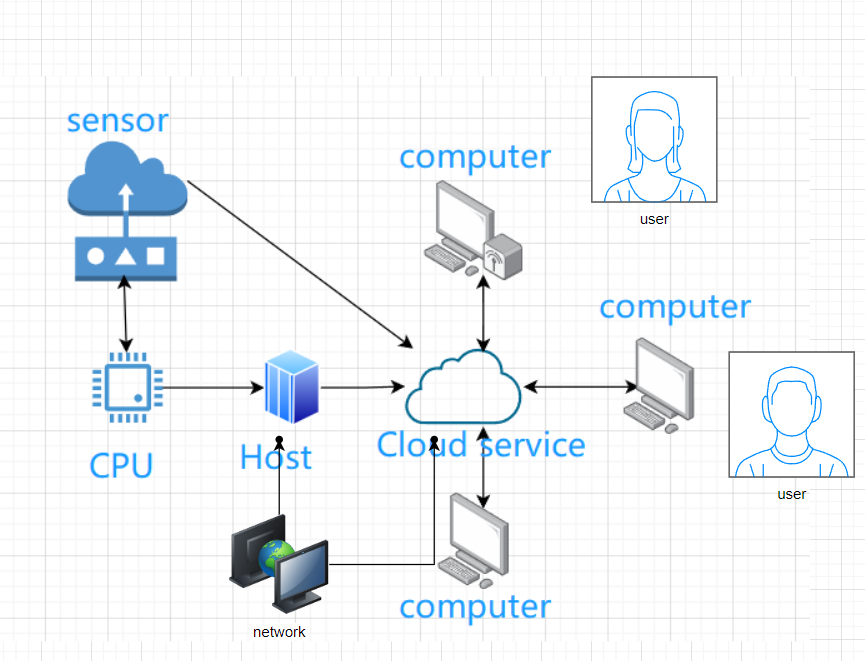
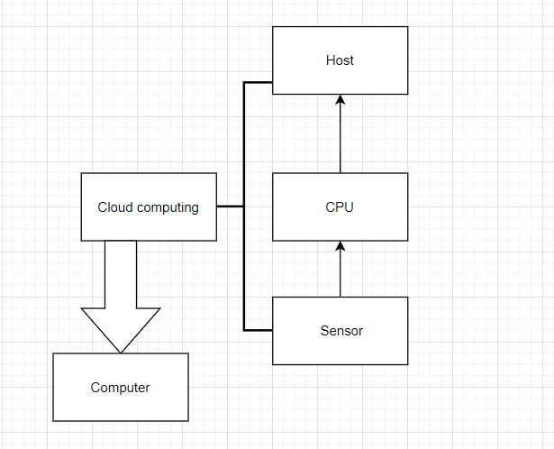

My ICT project: Principle and application of cloud technology
| Java | CPU |
| Need software: Java（Windows 10） | The hardware: Intel Core i9-12900KS |
System diagram 
The cloud computing transmits information to the CPU and feeds it back to the computer, and then the computer feeds back to the current page, and the CPU and the sensor transmit information to each other
The flow chart 
Here is a system diagram that depicts the equipment and tools required, with detailed diagrams that make it easy to understand
| Ying ao yu /Ted | Li xiong jian /Jeff | |
|---|---|---|
| Name this system? | Cloud Technology Application | Cloud information Technology |
| What are the system objectives? | Networks store information data | Store information in the cloud |
| List 3 essential system features and components? | CPU and mainframe and Information sensor,Baidu cloud disk | Information sensor and CPU, Ali Cloud |
| List 3 essential hardware from this system. | CPU, memory, display | Mainframe, memory, hard drive |
| List 3 essential software from this system. | Ali Cloud, Baidu cloud disk, database | Ali Cloud, Baidu cloud disk, database |
| List 2 external system components. | Information stored on customer and external Lans | Customer and extranet |
| List 2 system benefits | (1) Network storage data convenient, speed (2) can use large capacity | (1) Public free use (2) high security performance of information storage |
| List 2 project difficulties: | (1) The number of users is large, and the compatibility of the system is strong. (2) There are many information data that need to ensure security | (1) The information data calculated by the system is huge; (2) the time that information can be stored |